Слева — экраны бота как в коде сейчас (тексты из screens.mjs, shop-screens.mjs, обложки из covers.mjs/cards.mjs). Справа — предложение: плоская «лестница поверхностей» сайта, сетка 48 px, Inter 700 с одним синим словом, окна продукта вместо 3D-клипарта, кастомные эмодзи из иконок сайта, короче путь до ключа и оплаты. Сценарий играет сам; кнопки «▶ Повторить» и «Пауза» сверху, цитаты «⌄» раскрываются по клику.
Сейчас
Предлагаю
Метрики и моушн
Клики до цели
Ключ: 4 → 3 · Оплата: 5 → 3
Согласие встроено в шаг подписки: один экран вместо двух, юридический текст остаётся видимым одной строкой (проверка — eng-fetchr/юрист).
Срок выбирается на карточке тарифа (сегмент 1 / 3 / 6 / 12 мес, правка того же сообщения), промежуточный экран «Счёт на оплату» убран: «Оплатить» — сразу URL Robokassa.
Ключ копируется кнопкой copy_text (Bot API 7.11), без выделения текста в <pre>.
Метрика и проверка
Старт → ключ: сейчас теряем 29–45% на согласии (_analysis/smm/2026-11-16). Цель ≤ 20% за 14 дней, A/B по чётности user_id.
Открыт тариф → оплачено: брошенных 35%. Цель ≤ 25% за 30 дней.
Доля 12 мес в оплатах «Стример»: сейчас не меряется (paid_by_plan = other) — нужен фикс учёта.
Новое сообщение — только событие (ключ выдан, оплата прошла): подъём 8 px + fade 220 мс.
Тост answerCallbackQuery на каждое нажатие, «печатает…» (sendChatAction) перед выдачей ключа и после возврата из Robokassa.
Видеообложки (MP4 ≤ 5 с, первый кадр = PNG)
home: полоса Архива дорастает до значения 2,4 с; точка REC пульсирует 1,6 с.
shop: карточки тарифов поднимаются по очереди 320 мс, шаг 80 мс; затем статично до конца цикла.
key: чип «Активировано» появляется 320 мс; paid: LIVE пульсирует, полоса записи растёт. Цикл без рывка: последний кадр = первый.
Без MP4 (или в списке рассылки) уходит PNG — те же SVG, что ниже.
Новые обложки 1280×720
Исходники: design/bot-redesign/covers/*.svg, генератор covers.mjs (PNG рендерит resvg со шрифтами бота). Все подписи ≥ 24 px на холсте 1280 (≈ 7,5 px в пузыре 400 px только у служебных подписей окна; главные факты 52–116 px).
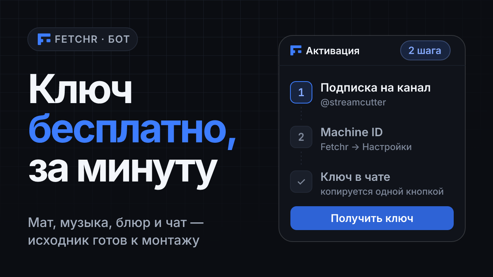
home-new · главная, нет ключа
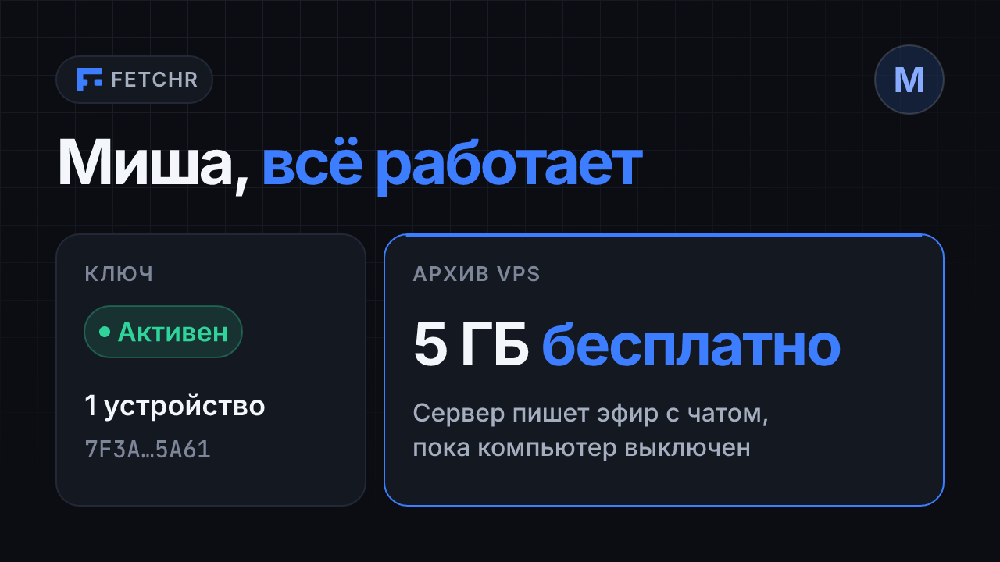
home-active · главная, ключ активен
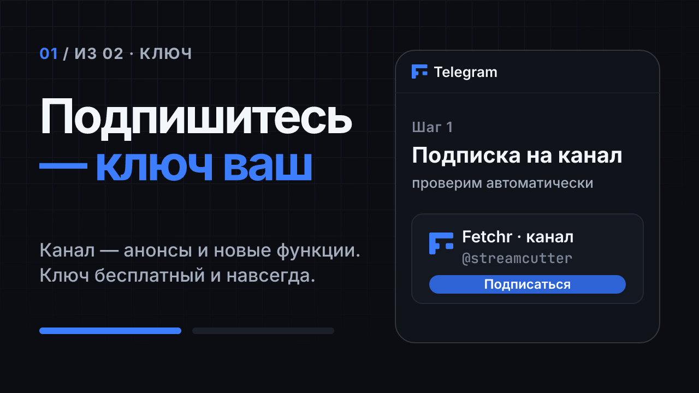
register-1 · шаг 1 из 2
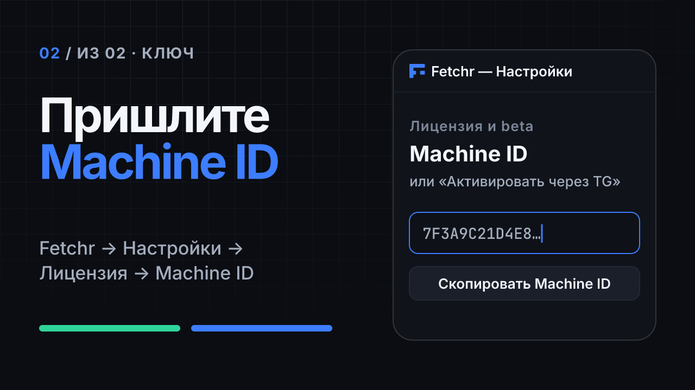
register-2 · шаг 2 из 2
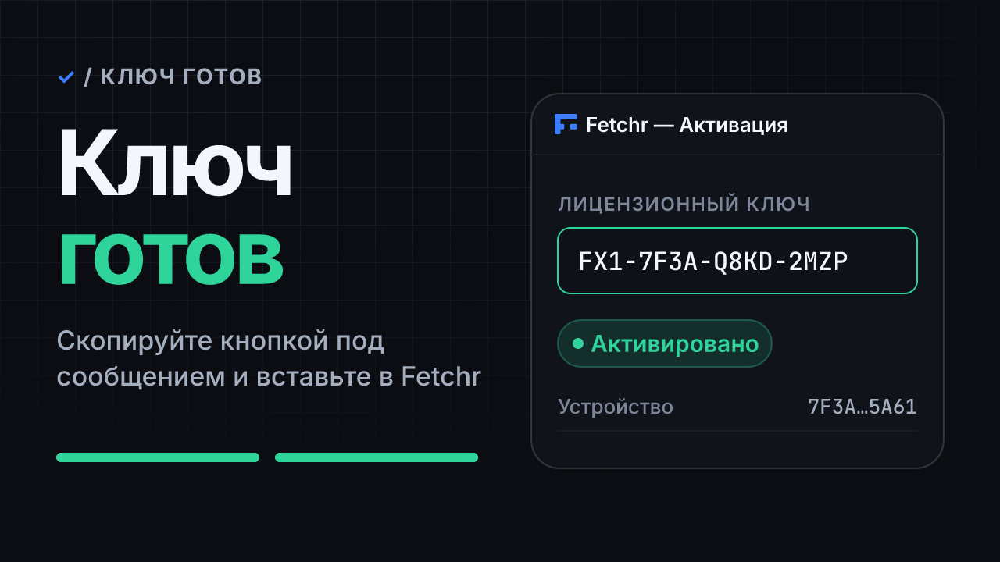
key · профиль/ключ
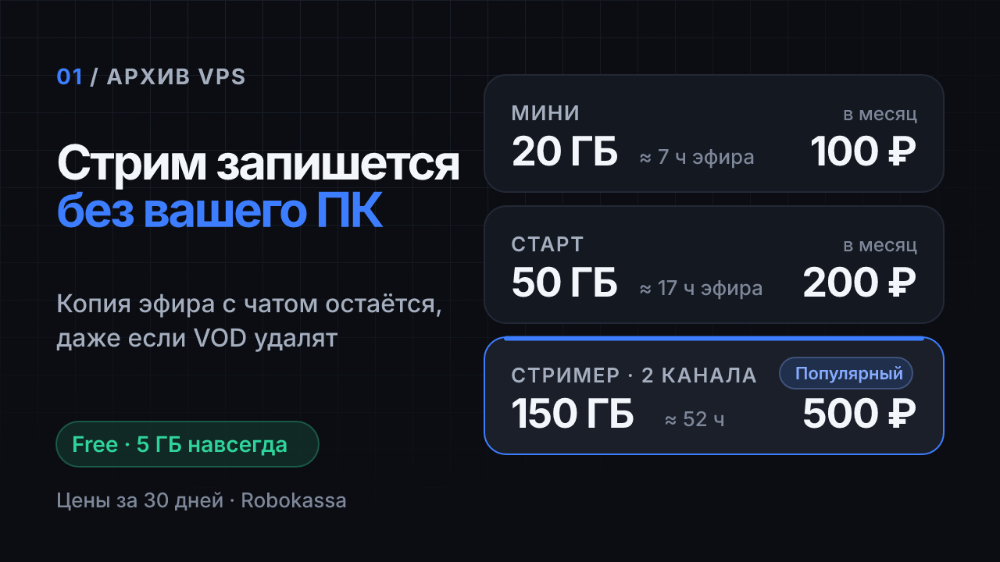
shop · магазин и тарифы
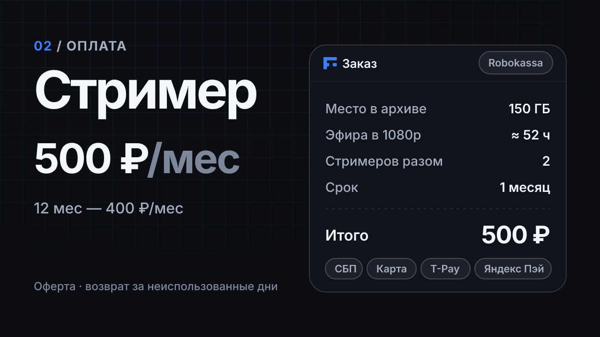
plan-1 · карточка тарифа
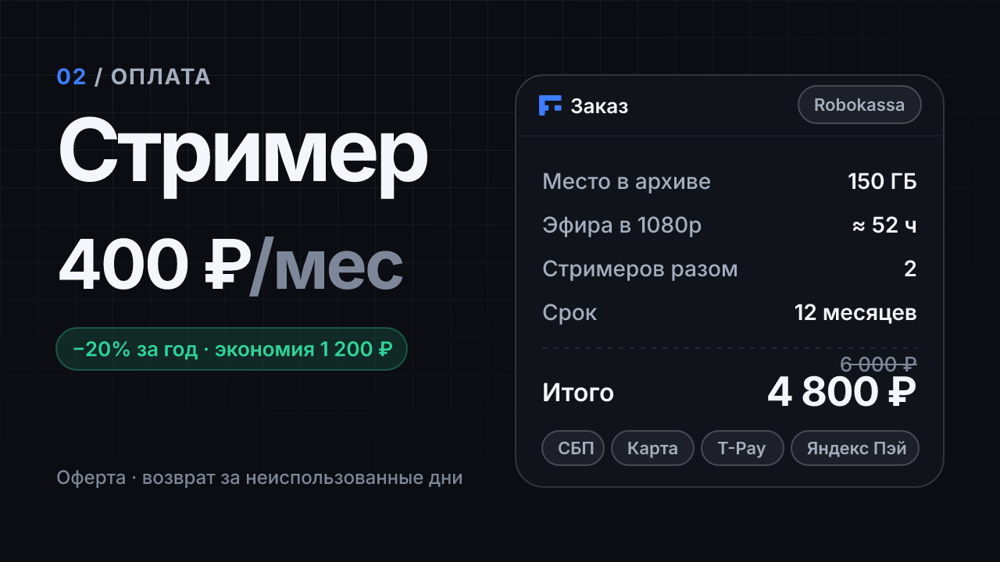
plan-12 · тот же экран после смены срока
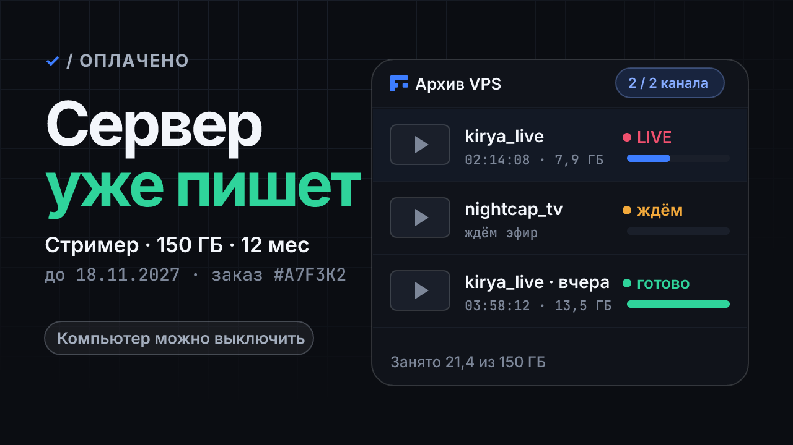
paid · оплата успешна
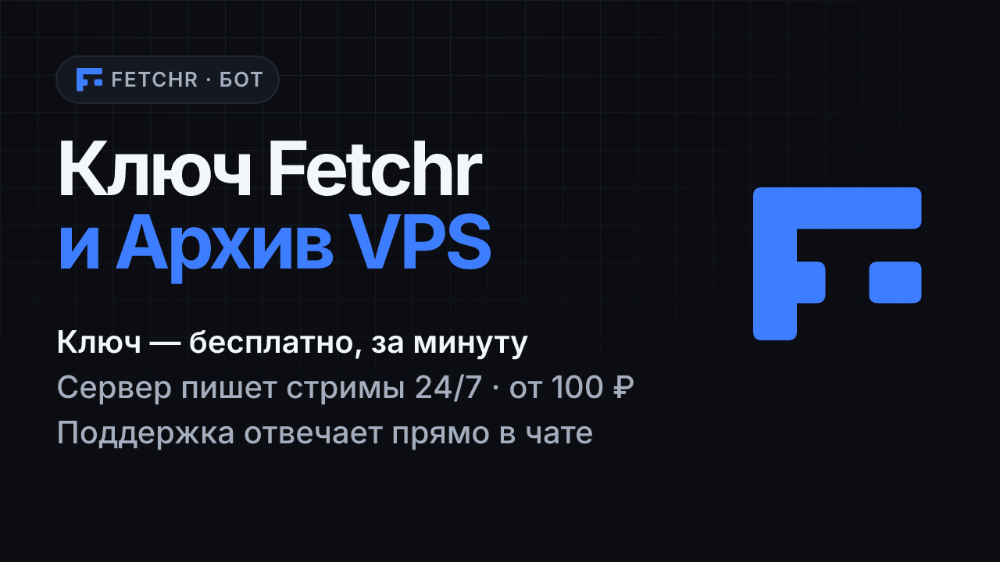
botfather-description · экспорт 640×360
Было
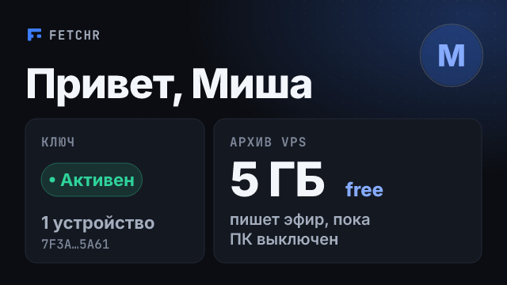
cards.mjs homeCardSvg
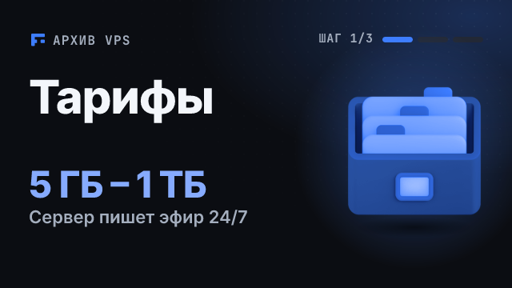
shop-1 · «5 ГБ – 1 ТБ», а в продаже максимум 150 ГБ
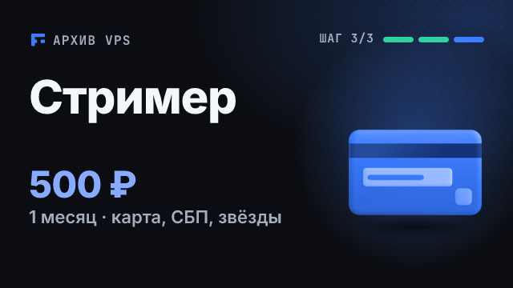
shop-3 · «звёзды» в подписи
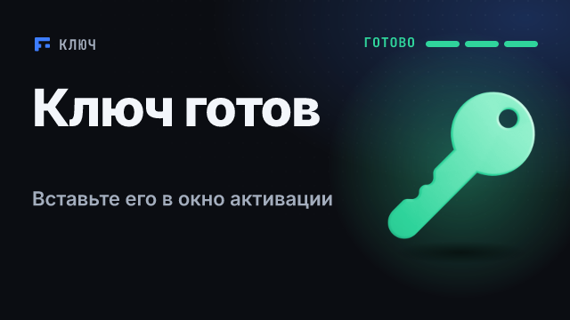
register-3 · 3D-иконка в монохромном фильтре
Токены витрины → бот
canvas #0b0d12
chrome #10131a
panel #141821
raised #1a1f2a
line-subtle #191e28
line #222835
text #f3f6fb
text-2 #a4aebe
text-3 #7d8799
accent #3d7dff
accent-cta #2e63d6
accent-bright #86abff
success #2fd49b
warning #f2a93b
danger #f0506e
zone #a78bfa
Типографика и форма
Inter 700, h1 −0.045em, межстрочный 0.98; одно слово акцентом (h1 em).
Подписи «01 / РАЗДЕЛ»: Inter 600 caps, трекинг 0.06em, номер синим. JetBrains Mono — только для ID, ключей, сумм и номеров заказов.
Радиусы 4/6/8/12/18 px, pill 999; на холсте 1280 ×2: 28–36 px у окон.
Плоско: без теней и свечений (tokens.css: «глубина — лестница поверхностей»), фон — сетка 48 px с радиальной маской, как .hero-grid.
Иллюстрации и моушн
Иллюстрация = окно продукта (.win): шапка со знаком, строки очереди с точками статуса и рельсами прогресса, карточки тарифов с синей верхней кромкой у выбранного (.plan.pick).
Иконки — линейные 24 px, stroke 2 (спрайт сайта). Знак Split F #3D7DFF.
Тон: коротко, на «вы», глагол + польза («Монтируйте, а не готовьте исходники»), цифры конкретные (≈ 52 ч эфира).
Пакет эмодзи «Fetchr Line»
Служебные эмодзи бота — те же линейные иконки, что на сайте, на синей плитке (20 / 32 / 100 px). Плоские, без глянца: так требует бренд-гайд сайта; глянцевый 3D-маскот можно оставить для стикеров. В кнопках — icon_custom_emoji_id, в тексте — <tg-emoji>, обычный эмодзи остаётся запасным (premium-emoji.mjs уже это умеет).
Эмодзи
Базовый
Где
key
🔑
Получить ключ, Мой ключ, строка ключа на главной
archive
🗄
Архив VPS (вместо 🛒 — продаём не «магазин», а запись)
restream
📡
Рестрим, апселл после оплаты
card
💳
Оплатить
copy
📋
Скопировать ключ (copy_text)
check / rec / spark
✅ / 🔴 / 🔥
статус ок, запись идёт, популярный тариф
chat / tg / home / doc / plus / play
💬 / 📢 / 🏠 / 📄 / ➕ / ▶️
поддержка, канал, меню, условия, допы, «как начать запись»
Профиль в BotFather
Поле
Сейчас
Предлагаю
Имя
Fetchr
Fetchr — ключ и запись стримов
Аватар
—
site-vitrina/assets/brand/app-icon.svg: синий Split F на #0B0D12, без текста
/start Главное меню · /register Ключ за минуту · /shop Архив VPS — тарифы · /support Написать в поддержку · /paysupport Вопрос по оплате · /terms Оферта и возврат
Набор «Fetchr Line»
Сетка 24, поле 2 px, обводка 2 (в эмодзи 2,25 — чтобы держать 20 px), круглые концы и стыки, радиус углов 2,5. В каждом знаке одна акцентная деталь и одна мягкая заливка тона, как в дуотоне приложения (src/ui/redesign/icons/motion/tone.ts). Плоско: плитка — ступень «elevated» #1f2531 с волосяной рамкой, без бликов и свечений. Два набора из одних исходников: плитка для текста (<tg-emoji>, читается на тёмной и светлой теме) и adaptive — одноцветный, с needs_repainting, для кнопок (Telegram перекрашивает его в цвет текста кнопки).
Все знаки на 20 / 32 / 100 px
Иконки тарифов
Вместо 🌱 🔹 🔷 🔥 — знак, который растёт вместе с тарифом: Free → Мини → Старт → Стример. Три направления, переключатель ниже меняет и контекст (кнопки, карточка, обложка).